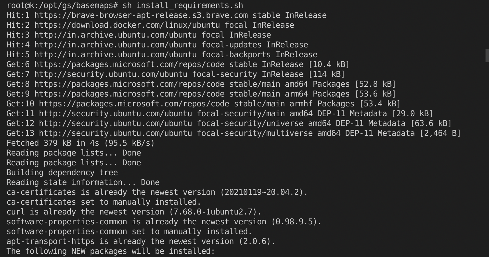

Getting Started¶
The purpose of this section is to provide you with basic informations on the structure and contents of this training.
Code to run the Basemaps can be found at this page.
First clone the repository and then open it in terminal and type following command
sh install_requirements.sh
